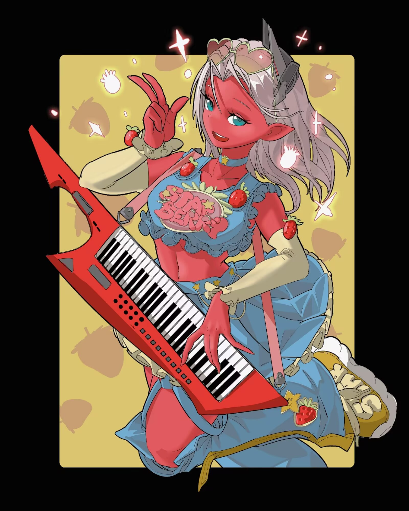

角色名
角色介绍
1
火箭和彼得高中的时候是玩乐队的。
为了方便演出，彼得做主给他俩在纽约布鲁克林区的年轻人聚居地选了一处公寓合租。火箭和彼得是乐队的常驻，而总是忙着课外实践的卡魔拉和总是忙着写论文的星云则是有空才来动一下她们的架子鼓和贝斯，但一伙人还是玩得很尽兴。
后来高中毕业，大学生忙专业课，一起敲锣打鼓的日子少了，但大家搬到了同一个小区，比以前当同学的日子还像亲戚。火箭和彼得拉上小区里的保安德拉克斯，德拉克斯拉上他亲戚家的女儿孟蒂斯，偶尔在小区“制造噪音”，其乐无穷。
在米兰留过学的卡魔拉牵头，他们每个人即兴演奏时都穿得很潮。短短一个高中毕业假期时间，这一块的住户都知道“GOTG”乐队的人是最喜欢时尚的一群人。
哦，不，不。彼得·奎尔知道，不完全是。
2
火箭和彼得合租的房间里贴满了红皮肤外星女孩露比亚丝的海报。
彼得也很欣赏火箭看动画的品味，但是事后回想，他总感觉有点吃亏：应该在刚搬进来的时候划个五五分的界限，各自的海报贴各自的地方，要不然就会变成这样，全境都被露比亚丝的海报占领。
现在，他自己买的复古乐队海报都只能在橱柜里吃灰了。
火箭穿着印有露比亚丝Q版插画的老头吊带衫，嚼着无上意志动画公司联动的零食品牌出的薯片，指责唉声叹气的彼得：“别这副表情！公用的柜子可是七成都用来放你妈妈送的磁带了！”
“说得跟那些磁带你不会听一样！”彼得叉腰抗议道，并且指向柜子里剩下的地方。
剩下三成是被火箭精心用防尘袋逐个包装好码整齐的露比亚丝徽章：她有着草莓糖颜色的皮肤，薄荷绿的眼睛，浅奶油色的头发（为什么自己想到的词汇都是和食物有关的？那是因为火箭一直在买联名的零食。他妈的），背景也点缀着草莓和若隐若现的星空。彼得也不得不承认她确实很可爱。
这还只是火箭一半的存货。他现在正头戴彼得的高档耳机，听着《Thunderclouds》在客厅里沉浸地舞蹈，腰上的挎包上挂着一排排的另一半徽章。
正当彼得准备也跟着加入舞池的时候，他发现火箭是准备穿成这样出门。
彼得：“神经。”
3
火箭喜欢看动画，就像彼得喜欢音乐一样。当然，彼得也喜欢动画，就像火箭也喜欢音乐一样。
但是彼得一直觉得说“喜欢动画”似乎有一点太笼统，没法概括其实质。没错，火箭和他是发小，两个人是小学起就一起逃课回家，挤在彼得的卧室里看盗版影碟的好兄弟，但是事情发展成这样，总感觉和预想中的不太一样。
就像是火箭和彼得会一起一次不落地逛动漫展，但是彼得会cosplay成热门角色和人合影，而火箭则会把自己业余手工接单赚的钱全部花给黑心资本家无上意志公司，然后拎着一袋珍贵的亚克力回家一样，火箭和彼得的爱好有所明确的参差。
小学低年级的时候，火箭和彼得还会一起看《星际宝贝》。等俩人升上高年级，一起看子供动画的日子一去不复返：彼得沉迷用花言巧语追求同班的卡魔拉，火箭则在追《露比亚丝：起源》；初一的时候，彼得在和卡魔拉交往，火箭在追《露比亚丝：萨曼莎》；初二那一年，卡魔拉被她爸爸萨诺斯带走出国留学了，被分手的彼得哭得肝肠寸断，求火箭安慰他，火箭一边安慰他，一边追《露比亚丝：内战》。
到上高中，卡魔拉说不喜欢留学，硬是争着回美国读了书。虽然一年半的米兰留学让卡魔拉对于要不要接着谈恋爱有了些新的看法，但彼得还是喜不自禁，抓着火箭说自己（又）要恋爱了。火箭听着他一直说一直说，表示了支持，最后也认真地宣布：“告诉你一个好消息，我也要恋爱了！”
“啊？谁啊？”彼得傻眼了。他没见过火箭接触任何三维的女性啊！
“我决定和露比亚丝交往。”
“……神经！！”
4
高中乐队排练的时候，火箭把自制的露比亚丝等身立牌放到闲置的电子琴旁边，假装他们这个乐队有一个键盘手。
正在给调试贝斯的星云和擦着自己架子鼓落灰的卡魔拉纷纷侧目，彼得擦着汗向她们解释，火箭是个动漫爱好者。
“我知道，但是这个……”卡魔拉用自己的鼓棒指向立牌。
“她是我女朋友。”火箭隆重介绍，“从今天开始就也加入‘GOTG’了！”
火箭自信地说出这些话，彼得皇帝不急太监急：“这、这是他们圈子里流行的一种……一种……小众爱好方式，会把虚拟人物当成真实存在，尤其是当成恋爱对象。”
“拜托老弟，对我女朋友尊重一点！什么虚构人物，我女朋友是有灵魂的，我能感觉到！”火箭义正词严，抱起吉他随手一弹就是子供动画版《露比亚丝历险记》的片头曲。星云听见忍不住地跟着哼了起来，最后试探着唱了出来：“‘拯救银河系的美少女露比亚丝堂堂登场’？”
“对！就是这首！”火箭给星云比大拇指。
卡魔拉笑了：“我和星云小时候也爱看这个。”
彼得感觉自己的汗腺从未如此发达过。
搬到布鲁克林之后，他们自娱自乐的乐队有了铁杆粉丝。
虽然“GOTG”只是把自己的乐器摆到小区的广场随性演出，但是彼得可以看到一个毛发旺盛的金发壮实男几乎每回都来听，并且会起劲地为精彩处鼓掌。
作为（自封）乐队队长，彼得当然很好奇这位铁粉的来头，只不过每次演奏结束后他都去跟火箭交头接耳。
终于有一天，彼得弄清楚他的来历：原来他是同校的学长，叫索尔，已毕业，有个当大学音乐教授的老妈带着他搞音乐。
但是这都不重要，重要的是他和火箭在校园论坛认识的。
彼得的心暖暖的：“原来在学校论坛发宣传GOTG也会有人看啊！”
火箭沉默了一下，然后说：“不，我们是搞《露比亚丝历险记》同人认识的。”
索尔热情地搂住彼得的肩头，自我介绍：“嗨，奎尔！你可以叫我网名雷神，音乐方面我是搞电音的。但是也可以直接叫索尔！我是《露比亚丝历险记》的忠实粉丝，当然，没有你朋友那么忠实。”说着，他对露比亚丝立牌旁边的火箭吹口哨。
火箭哼了一声，彼得知道他有点不好意思。
“火箭是这部动画的考据党，我读了他的分析帖，很佩服他。”索尔拿出手机，“给你看他的主页！不过他和我不一样，我是全员推，他是……”
“等等！别给他看！”
然而为时已晚。在他阻止索尔的动作之前，彼得·奎尔已经在索尔的手机屏幕上看到了：
[考据]《露比亚丝历险记》是如何联动《露比亚丝：起源》《萨曼莎》《内战》三部曲的
[分析]《露比亚丝历险记》的世界观
如果只是到这里还好。但是……
[同人]致亲爱的银河中的你
[吐槽]垃圾PW你经费挪用到哪去了，新动画崩成什么样子了都？？？
[扩列]露比亚丝梦男扩列！露比亚丝单推，同担NO！ 萨露萨NONONO！
[匿名]吃萨露的都好没品，感觉无上意志也4了，没活整了就嗯麦麸，wflbb #请萨曼莎离开露比亚丝独立行走 #请无上意志停止用看板娘麦麸 #露比亚丝 单飞
彼得：“……”
火箭：“。”
5
火箭一直相信露比亚丝是特别的。她就存在于自己的生活中，不只是虚拟角色的那种存在，她一定在冥冥之中影响着自己，牵引着自己。
“我真的很为你们的爱情感动，而且呢我也一直见证你的感情，绝对不可能质疑你，”彼得抓住火箭的肩膀，表情有些崩溃，“但是你能不能不要找旺达·马克西莫夫搞什么梦向占卜？求你了兄弟，这个小区里什么‘复仇者’的都是现充，不会懂你的。”
“那斯蒂芬·斯特兰奇？”
“他也差不多啊！”
但是既然彼得没法阻止火箭亲自动手给自己做一个真人大小露比亚丝手办、火箭用露比亚丝周边填满他们的合租房、火箭说梦话喊露比亚丝我要梦见你，那他自然也没办法阻止他见斯蒂芬·斯特兰奇。他不情不愿地作为火箭和现充们之间的沟通渠道，带着他来到斯蒂芬的塔罗占卜店前。
“信这种东西我怀疑你老了会被骗保，真的，下单了可别说出去你是我兄弟。”
火箭一摊手爪：“不是很多大拿都很相信斯特兰奇博士的占卜结果嘛？像我们小区的托尼·斯塔克，娜塔莎·罗曼诺娃……”
“人家是问事业、问前任复合……没人占虚拟角色对自己的感情吧！”
然而火箭一向擅长当第一个吃螃蟹的人。他坐在长着小胡子的英国占星师斯蒂芬·斯特兰奇面前，摊开他在eBay卖手工玩具枪赚的一笔厚厚的零花。对方显然也是见过大风大浪的人，眼皮也没眨一下，转眼间把他的一叠钞票收进手袖就开始抽牌。
“居然都是正位。”斯蒂芬抬眼，看了看双手抱臂的火箭，然后就是一大段难懂的话：
“代表你自己的……魔术师。意志力、足智多谋、充满能力、没有欺骗或幻想。代表你的恋人的是女祭司，无意识、直觉、神秘、灵性、更高的力量和内在的声音……”
“关系……命运之轮。变化、周期、决定性时刻。未来的发展，正义。责任、真相、不逃避和正直。”
火箭打断他：“所以意思是很好？”
“要具体的解析我需要花一段时间才能告诉你——”
“所以是好对吧？”
“——这其中还要看你自己的选择……”
“所以是好？”
“对。”
走出占卜店，火箭春风满面，走一步扭三下腰。
彼得听了来龙去脉，一手握拳拍另一手掌：“这个我会解！”
“啊？你还会这个？”
“意思是你他妈信这个老了会被骗保，兄弟！”
6
火箭很确定老了之后会被骗保的是彼得·奎尔，因为他现在正在目睹一场飞船坠毁事故。
事情说来复杂。大一结束之后，作为乐队主唱以及油管翻唱人，彼得取得了一些柏林摇滚音乐人的青睐。
他被邀请前往柏林深造，尽管他很想带上乐队的其他人，不过其他人安慰他读完书回来带飞他们就好，于是彼得依依不舍地去了柏林。
现在，火箭一个人住，并且领下了GOTG队长的头衔，继续带着剩下的人搞摇滚。他还拉上了自己的老乡科斯莫，科斯莫拉上了邻居亚当……
在火箭的努力下，GOTG越搞越红火，人气水涨船高。
彼得虽然偶尔在SNS上吐槽“怎么就没让我赶上好时候”，但是也很兴奋地期待着留学回来之后迎接乐队的新篇章。他怂恿火箭租下一个更大的场地，方便开音乐会。
火箭正有此意。他看上了郊区的一块地。偏得很，偏的能建航天基地，但虽然偏，想着都郊外了，横竖多远都是要开车来，也就没那么有所谓了。
关键是那一块儿确实够大、够人烟稀少，可以让他们大干一场。他去那儿实地考察过一次，感觉不错，打算再去一次，这回拍拍照给其他人瞧瞧。
火箭开车来到郊区，路途遥远，到的时候已经夜幕降临。
今天星光很好，火箭干脆不做不休，架起手机，准备好好地拍个视频。就在此时，一道流星划过，火箭连忙许愿见到露比亚丝。
——等等。
那*他妈的*好像不是流星！
他震惊地意识到一个未知飞行物坠毁在了他千挑万选的音乐会场地附近。
也不知道哪来的勇气，火箭仿佛收到直觉的指引，开车上前检查。眼前的是一个除了宇宙飞船之外完全不能说是别的的高科技造物，一头扎在土里。
他上前敲了敲。
“真是UFO啊？”这金属板拆了挂eBay不知道赚多少钱。
突然，他敲了两下的地方自动开启，火箭吓了一大跳。然而接下来的事让他更加震撼（并且脑海中响起《露比亚丝历险记》的BGM），因为从打开的舱门里走下来的正是头晕目眩的宇宙守护者、红皮肤的外星人、即将拯救银河系的美少女露比亚丝！
7
感谢彼得·奎尔的留学深造，没惊动任何人，火箭就把这个星际飞船失事坠机在地表的红皮肤外星人安置在了自己公寓里。
话说到飞船舱门打开的时候。火箭只见露比亚丝一副刚从撞击中恢复、勉强站起来的样子。
但她显然没完全恢复，因为舱门一打开，她没忍住就往外面的原野上疯狂地吐了起来。等这阵强烈的“晕船”过去，她惊讶地看向火箭：“你是——”
激动得快要晕过去的火箭不浪费时间，立刻为她报上名字：“我是火箭，火箭浣熊！你、你是我最喜欢的动漫角色，我就知道你果然是真的！”
“动漫角色？”露比亚丝一副处理信息过多的表情眨了眨眼睛。
火箭也大脑宕机。要怎么跟纸片人解释地球的世界观？每天做梦要见露比亚丝，事情真发生了，却还没想过说点什么好。他有点紧张地拽拽浣熊耳朵。
“这、这里是地球，总之，你是飞机，不对，星际飞船失事了吗？”
露比亚丝沉痛点头：“抱歉，我不擅长驾驶飞船。”
8
火箭顺理成章地把坠机的外星美少女带回公寓。他还没想好要怎么办，包括要不要跟彼得说（毕竟这是他和彼得合租的公寓），但是说真的，她真的有无上意志公司联名的草莓糖一样的皮肤、薄荷糖一样的眼睛和淡奶油颜色的头发，要不是道路空旷无人，不断的分心够让火箭吃好几张交通罚单了。
一路上火箭都很激动地开着他的八十年代老车：“从小我就跟我的朋友争论你是不是真的，我就说露比亚丝真实存在！彼得还不信我，嗐！”
他得意得浣熊尾巴都翘了起来。
“现在好了，看看谁老了之后要被骗保？露比——我是说、露比亚丝！我真的一直一直都相信我们之间有一种特别的联系！”
露比亚丝听得很认真：“喔——”
“你一直是我最喜欢的虚构人物。但是当然，我一直觉得你肯定不只是虚构人物。我还总感觉你就是我的乐队的一员呢。”
露比亚丝陷入沉思：“喔——？”
“抱歉，但你的世界观是怎么样的？是电影三部曲的，还是动画剧集的，还是衍生小说的？……算了，不要小说的那个，全都在卖cp，卖给萨露姐看的，不要。”火箭后半句只说给了自己。
这一回，露比亚丝没“哦”，而是仿佛在消化在火箭朋友的世界观里自己是个虚构人物的设定。
到了火箭和彼得的公寓，火箭热情地指着满墙壁的露比亚丝海报。铺天盖地的无上意志出品红色女孩海报铺满了他的公寓，他摆了个“请看”的手势：“你看！每一版的特典我都收集了！”
露比亚丝看着墙壁，满脸呆呆。火箭连忙解说：“这张是《露比亚丝：内战》首映送的；这张是买全球限定周边时送的；这张是游戏预售豪华版加购……”
说到这里，他还不忘吐槽彼得：“多完美的海报！彼得还抱怨我贴满了整间房子，没地方贴他的复古乐队海报了，哦，还有我们的乐队的海报。但是嘛，我们的乐队有排练室，在那里贴就好啦，当然我知道，他是GOTG队长忍不住多操心点——”
露比亚丝冷不丁地说：“诶？彼得是银河护卫队的队长吗？不是你吗？”
火箭大脑停运半分钟。
…
……Guardians of the Galaxy啊，好像的确是GOTG本来的意思，只是他们取了缩写当乐队之后，几个人就再也没提过。银河护卫队。有点陌生，但还有点亲切。话说她难道听我们的歌，她怎么知道我是队长，……
“队长？”她试探着问，火箭的心脏突然感觉被握紧了。他抖了一下，露比亚丝立刻露出了后悔的表情：“不、不行，果然还是要一点点说吗……”
怎么回事？什么啊？什么一点点说啊？他的头有点痛起来了。
露比亚丝担心地看着他。忽然，他眼前的景象变得模糊起来，像是被烧熔褪色一样，刚刚还被他兴高采烈地指着的一屋子露比亚丝海报变成了光秃秃的水泥墙壁。
不，不只是海报，这个塞满了他和彼得这两个乐队男孩的家具的屋子现在彻底变成了只有墙壁的毛坯房。
他震惊地伸手想摸一下墙壁，伸手却看到自己身上不是那件印着露比亚丝大头的T恤，而是熟悉却想不起来的制服。
难道他穿越进那篇写他自己是露比亚丝的队友，还是队长的同人小说了？哈哈，哈哈哈……他抬头看着一脸担心的露比亚丝，不知不觉间她靠近了许多，薄荷色的眼睛里已经能倒映出自己毛茸茸的脸了。
对了，说起来，自己是浣熊来着，怎么会和一群人类一起读高中的？
“队长……拜托……告诉我起码还有你能醒来……”露比亚丝双手合十，小声地在他面前请求着。
9
“也就是说……宇宙之初除了诞生了无限宝石之外，还存在着曾经有可能聚合成无限宝石的宝石废料？”
“是的。不如说这一部分还是你告诉我的……”
“每一个无限宝石都对应有其‘废料’，然后无限宝石的废料部分——我可以理解成有相似能力，但没有那么强，对吧？”
露比亚丝着重强调：“但是即使没有那么强，也要小心——”
火箭深深叹气，扶着额头：“‘没那么强’只是对无限宝石而言，我明白。就这东西本身而言，当然还是十分危险……要不然就不会催眠整个地球上的生物了！‘无上意志’这家伙，为什么连无限宝石的废料都能搞到？！”
“队长……”
但是很快火箭又打起精神来：“没关系！对付无限宝石，我们是专家！”
露比和火箭一起离开公寓楼，火箭才发现他和彼得的“合租房”完全是一个水泥烂尾楼，连最基础的外墙都没有，但所有人对这样的环境却毫无察觉。
意识到事情十万火急，他立刻又一次开车带着露比回到了坠毁的备用飞船，读取电脑剩下的信息，让自己快点完全理解状况。
万幸，飞船电脑还没有损毁。火箭飞快地搜索关键词。
无上意志，伪心灵宝石……
…
银河护卫队和无上意志的护卫舰交战的时候坠落在了地球上，除了拥有传送能力离开的露比亚丝。
在那之后，无上意志用他自己改造后的伪心灵宝石对地球发出魔力波，试图洗脑地球上的所有高等生物。
但是，这对于一个只是“宝石废料”的存在来说，这样大范围的捕捉并统一洗脑是做不到的。无上意志只好选择退一步，给当时在地球上的生物生成一个集体性幻境，其中的内容将倾向于集体乐于接受的，这样受到的思想阻力会在他的可控范围内，并且使人失去反抗意志。
因为露比并没有在集体性幻觉之内，所有人都认为她是虚构的。
……只有火箭，一直有一种若有若无的直觉，认为她真实存在。
露比在地球卫星轨道绕圈开着自己的逃生舰。
因为不确定骤然进入是否也会进入影响范围，她只好尝试进行一些间接的干涉。如果做得太明显，很可能被发现，露比决定只给火箭一个人传递一些消息。
说实话，这真的难倒了露比亚丝。首先，这些消息要足够符合地球美国人的日常，才能不引起注意。但是它又不能太合理了，要不然就不会让人有那种从梦中惊醒的欲望了！
思虑良久之后，露比亚丝做出了如下尝试：
1、接通了广播电台，在美国中小学生最爱收听的频道编了一个以自己为原型的冒险电影三部曲；
2、用火箭上次去地球旅游时给自己买的键盘瞎弹一气。
3、在瞎弹的结果让露比亚丝自己都有些难以接受之后，她选择直接黑进了火箭的手机蓝牙，播放了一首Sia的《Thunderclouds》。
…
露比一个人查了无数有关催眠的资料。
考虑到发出催眠魔力波的原料是心灵宝石的废料，可以预想这种催眠不简单。关于深度催眠是否能直接拍一下叫醒，露比亚丝不敢肯定，但她知道最好还是别这样做。
最好的方式自然是一点一点地让对方感觉到不对劲，逐步地把对方带出来，这样给正在深度催眠中的大脑带来的伤害最小。
所以，即使见到火箭的一眼，露比亚丝很想大声哭着说“队长我好想你啊我跟你们失联好几天了我逃出来了但是我的逃生船也被击落了虽然我现在坠毁不会被洗脑但是我们现在这可怎么办啊”，她还是忍住了。在下意识的“你是（队长？！）——”被火箭自己打断、并且火箭主动报上姓名之后，她咽下了眼泪和腹稿。
原来在这个关联性幻觉里，自己是动画里的角色，队长还是自己的狂热粉丝，还认为自己一定真实存在，以为喜欢的角色打破次元出现在自己眼前了。
这要怎么说才好呢？露比有些为难，但还是认真地听着火箭两眼放光，说着他有多坚持露比的存在，而他绝对、果然是比其他人更聪明的那一个。露比似懂非懂地“喔”着。
到了火箭和彼得的“合租公寓”，露比看到的只是一个只能说是工地的钢筋水泥聚合物。
即使她不熟悉地球建筑，也完全看得出这只是半成品，但火箭很开心地带着她上楼，开门，然后在一无所有的房子里带着她到处介绍，尤其是墙壁。
他指着墙壁说那上面贴满了她的海报。但是露比亚丝眼里那就是一块连漆都没涂的墙壁。他解释起来每一张海报都是在哪里购入的，还提到他们的乐队……
……幻觉中他们还组建了一个乐队，火箭介绍说叫GOTG，队长是彼得。露比没多想，很自然地认为这个乐队叫“银河护卫队”。
结果，说到“银河护卫队”、“队长”的时候，兴高采烈的火箭忽然像是被冻住了一样。露比吓了一跳，摇着一动不动的火箭，心提到了嗓子眼。万幸，半分钟后，火箭又有了动作，他看着墙壁，终于也露出了看一无所有的空墙的表情。
露比看着他有些茫然地看了看自己身上的着装，那是一身久未换洗的银河护卫队制服。
火箭有些恍惚地看向露比。露比担心自己是不是节奏太快了，不安地靠近火箭。当火箭露出努力回忆发生了什么的表情的时候，露比终于忍不住这么多天的所思所想，将手心相对，做出请求的动作。
拜托了队长！想起来吧！全部都！
10
来龙去脉逐渐在火箭脑海中复苏。他拍了拍自己身上制服的尘土，有些惋惜没能真穿上印着露比照片的老头衫，但是穿旧了的制服给了他熟悉的感觉。
“队长，接下来怎么办？随时等待命令。”露比亚丝在沉思的火箭身边出声。
火箭闻言，抬头环顾飞船。遗憾的是，除了电脑部分之外，其他的地方都有些破损得有些不忍多看。他想修复一些地方，让飞船重新运转，但是工程量估计不小。
“接下来……我们回去找找附近有没有机械工厂、实在不行五金店。”火箭在脑海里画重建的图纸，“我要修好这艘备用飞船。”
火箭又一次开车载着露比回到居民楼区。露比下车，立刻在四周传送了一番，站在各处制高点观望，很快，她站在高高的楼上，指着不远处大声对火箭示意：“队长，你看，那里有一家五金店！”
这么一说，火箭也依稀记得那里开了一家德国工厂出品的大型五金店。
事不宜迟，他和露比立刻来到五金店前，挑选了一番他能用上的零件。由于店员和收银员处于幻想状态，火箭只动了动嘴皮，说自己已经交上数张百元美金，就把里面最贵的各种零部件都零元购了过来。
火箭一边心想简直不要太爽，一边和露比合力把机械零件搬上车后备箱。他庆幸这辆车还是够大的时候，忽然眼尖地看到五金店门口的电话亭里站在一个熟悉的人。
彼得·奎尔！这家伙不是在柏林吗？火箭惊诧地想。不过转念一想，这结论也显而易见。
火箭让露比继续搬运零件，自己冲上去就扯着他叫起来：“喂，醒醒，奎尔！彼得·奎尔！彼得！”
然而彼得如梦游一般伸出手指在起雾的电话亭玻璃上傻笑着写下“GAMORA”六个字母，手握红色的听筒，用着已经有些变得柏林腔的英语对电话另一头说着“德国留学”的家长里短。
火箭忍无可忍，扯断了他的电话线：“喂——”
彼得的笑容凝固。火箭正松了口气，就看到彼得撅起嘴，有点不满地低头看向他：“喂喂喂，兄弟，太不够意思了吧？明知道每周三晚上是我和卡魔拉的跨洋电话时间，还打视频电话过来？什么事这么着急啊？”
火箭一阵急火攻心，但想起露比说不能操之过急、又想到自己恢复得快是有露比一直在引导自己的原因，只好不情愿地说：“呃……是乐队的事。”
“哟！还能是什么事啊，难住我们‘GOTG’的新队长啦？你不是总是一副春风得意、游刃有余的样子吗？发生什么事啦，可别把我最爱的乐队搞砸了？”彼得换上了嬉皮笑脸。
“我……我给乐队挑的音乐会场地突然被不明飞行物砸了，用不了了。”
“啊？居然有这种事？UFO？！牛逼啊！我小时候最喜欢和宇宙有关的东西了！所以我们的乐队才叫Guardians of the Galaxy来着！”
说完这句话之后，彼得也露出了茫然的表情。但是火箭不能确定继续引导下去是否速度过快，彼得的大脑能否承受，有点不甘心地回到了车上，准备边修飞船边接着想办法。
回到飞船，火箭热火朝天地拧着螺丝，按脑中的模型修着飞船，露比则默契地给他递上需要的零件。
“对了，队长，”火箭正全神贯注修飞船，露比突然问，“在你们的幻觉里，我是虚拟角色的话，你一般都怎么看待我啊？”
“啊？！”火箭毫无防备，差点被这提问吓了个趔趄。他脑海里不禁回想起自己真情实感写《致亲爱的银河中的你》的日子……虽然那段日子并不存在，但是伪心灵宝石冲击波模拟出的幻觉是如此真实，以至于大脑根本不受他控制地跟着回忆起了《露比亚丝全肯定bot教你看露比亚丝三部曲》《细数PW公司的罪恶：垃圾作画、捆绑CP、饥饿营销…还有什么是你们干不出来的》《萨露萨真的是我吃过最难吃的CP，没有之一》……
面对露比亚丝单纯好奇的表情，他很庆幸毛绒的脸看不出自己的脸红：“咳、咳咳咳……这个嘛……虽然别人觉得你不存在，但我一直把你当成‘GOTG’的成员，你是键盘手！”
想起火箭之前地球旅游顺手给自己捎的电子琴，露比深以为然地“噢”了一声：“键盘手啊，听起来很酷！你是主唱吗？其他人呢？”
火箭自然地接着说：“算是吧，不过彼得当主唱的时候更多。我大多数时候是吉他手，卡魔拉是鼓手，星云是贝斯手，不过她们两个的爸爸家教有些严，来得比较少，我和彼得的爸妈比较支持我们的爱好，所以我俩高中的时候天天聚在一块搞乐队……”说到这里，他才意识到事情有些不对。露比也一时间不知道说什么，定定看着他。
“我……靠，这个伪心灵宝石的效果太强了，那些幻觉就他妈的跟真的一样！”火箭有点慌了，放下手中的工具，集中注意力平复自己的情绪，但是那些……哦……小区门口站岗的德拉克斯把他的歌介绍给孟蒂斯、孟蒂斯加入乐队的时候激动地在她的白衬衫上用墨水写下大大的“GOTG”……还有彼得，他俩小时候总是一起看动画片，一起上学，一起去漫展，彼得爱出cosplay，他爱买露比的周边，但是还是会帮他拍拍照片……
“队长？队长？……火箭？”
“不、不，我没事，只是……那些记忆……像真的存在了十几年一样！我缓一缓，马上就好！”火箭慌乱地后退，不想让露比发现自己逐渐失控的情绪，但是露比脸上写满了担心，他退一步就跟一步上来。
最后，火箭再也无法忍耐，失声痛哭了起来，露比把他抱进怀里。
“我……抱歉……只是……那些……和大家一起高高兴兴地读高中？幸福地长大？还有会给我一个晚安吻的爸妈，所有的这些……”火箭抽噎着，把自己的脑袋埋在露比肩膀上，“虽然我明白……”
露比轻拍着火箭的后背，像哄孩子一样安抚他：“我很抱歉，队长，但我会陪着你的……”
“不！我没事……我马上就没事了……”火箭这样说着，但是不受控制地揪紧了露比的衣服，他在露比的怀里放声哭起来，“对不起，身为队长却这么丢人……但是，和从小一起长大的朋友们组建一个乐队……妈妈还在当大学音乐教授的索尔、还在跟卡魔拉恋爱的笨蛋奎尔之类的……该死的，明明只是幻觉，明明情况这么紧急……再给我两分钟，我很快就会调整好的！……”
火箭感觉自己根本控制不住自己的眼泪。他放弃了擦干眼泪，任由它模糊自己的视线，只希望这股情绪快点过去。忽然，他感觉自己的头顶被露比亚丝轻柔地抚摸，原先只是轻轻地环着他的露比抱紧了他的身体。
“我觉得……这不是小事。这些美好的部分不是真的，的确很痛苦。所以队长哭也没关系，崩溃也没关系，任性一下也没关系。虽然情况的确很糟糕，虽然的确很紧急……但是不用逼自己。不用很快调整过来也没什么，就让自己放松地哭吧，队长。”
火箭想要点点头，但是不受控制的猛烈呜咽让这个动作也是如此地艰难。
放任自己哭了一场之后，火箭和露比坐在旷野的草坪上抬头看星空。
露比体贴地给火箭递上她在之前居民区零元购的彩虹糖。火箭抓了一小把吃，而露比确认了他已经放松了下来之后，安心地抓了好几把彩虹糖嚼起来，直到把自己的脸颊撑成仓鼠一样才停下。
虽然眼睛还有点儿疼，但是看到此情此景的火箭忍不住乐了起来。露比不知道火箭在高兴什么，但是他高兴，她也开心：“队长，接下来我们干什么呀？”
火箭看了看修了一半的飞船，心里有了主意。
“决定了——还是先让我们找回我们那些笨蛋队员吧！”
11
火箭戴着墨镜，弹着改装后相当街头风格的黑白吉他，披上一件黑风衣，随身带上的是飞船里少数没被撞坏的东西：一部高档扩音器。
露比亚丝则戴着一个反光着彩虹色的心形太阳镜，挎着红白相间的便携式电子琴，在路边的商店里“免费购入”了一件牛仔短外套和一双印着草莓图案的红白相间的鞋子，耳边挂着耳麦。

火箭一手拨方向盘，一手放背景音乐，露比在副驾驶看着乐谱熟悉起节拍来。两人一路疾驰到植物园，火箭停好车，领着露比飞奔进植物园中心。幻觉中他和彼得在植物园里栽了一棵树，那么……
已经一个树在原地数日的格鲁特安静地待在植物园里休眠，一边汲取营养一边恢复，人头攒动的观光人群就像梦游一样完全没发现旁边有一个树人、一个红皮肤外星人和一只人型浣熊。
“嘿，伙计，格——鲁——特——”火箭扒着护栏，先是冲着格鲁特大喊了一声，然后对露比耸了耸肩，“我还以为格鲁特能成为高智慧生物催眠的漏网之鱼呢！结果他只是没连上网。好吧！那就计划正式开始！”
“收到！”露比反应迅速地按下音响的播放键。
火箭转身，面朝人群，大声说：“请看，新出道的双人音乐组合首秀——”当人们纷纷看向火箭和露比时，露比弹响电子琴，火箭再次面向格鲁特，对着刚放好的立式麦克风边唱边弹起吉他：
♪Can't stay at home, can't stay at school
不能呆在家，不能呆在学校
格鲁特迷茫地睁开了眼。火箭注意到它的枝条长得茁壮了许多，忍不住鼻头一酸，继续大声地唱道：
♪Old folks say, ya poor little fool
长辈们说，你这个可怜的小傻瓜
接着到了火箭和露比约定好交接的部分。露比调整好自己的耳麦唱起来：
♪Down the street I'm the girl next door
我是街上的隔壁女孩
火箭给了她一个“做得好！”的眼神，而此时格鲁特的表情也逐渐好奇起来，他来到围栏前，几乎要和火箭脸对脸。火箭越发来劲，弹拨吉他的节奏越发狂野摇滚：
♪I'm the raccoon you've been waiting for
我是你等待着的浣熊
两个人合奏的曲调比起原曲更像是“GOTG”乐队的风格。在最后，火箭和露比一齐唱道：
…♪I'm your chchchchch cherrybomb!
……我是你们的樱~~~~~樱桃炸弹！
“……我是格鲁特！”
音乐停下的时候，格鲁特跳进了火箭的怀里。
火箭开车从植物园回到居民区，这回有了格鲁特帮忙按音响，露比借着敞篷的优势，一路挥舞着“摇滚！”的标牌。
他们开车经过一户小屋，这是火箭印象中幻觉孟蒂斯住的房子。她正在草坪上除草，看到了孟蒂斯的露比有些激动地按响键盘，吸引她的注意力。
孟蒂斯停下手头的工作，看了看戴着心形太阳镜的露比亚丝和被她的身影遮了大半的司机：“你是？”
“我是一个刚出道的键盘手！”露比边说边弹奏。
“你弹得真好听。你的艺名叫什么？”
“我叫……”露比思考了一秒，“我是Starberry！”
“那为Starberry开车的带着盆栽的男孩，你是谁？”
火箭摘下墨镜，和孟蒂斯对视，孟蒂斯猛然愣了一下，然后火箭说：“哦，我是个天才摇滚新星、吉他手，你可以叫我的艺名——Rocket Rock！”
“Rocket Rock……”孟蒂斯低头笑了起来，“还有Starberry，你们现在是在街头即兴演奏吗？”
“是的！要加入我们吗？”露比充满活力地问道。
“好呀！”
孟蒂斯放下手中的除草车，来到火箭、露比和格鲁特的老式敞篷车上，露比为她打开后排的车门，伸出手扶她上车。在她们两手交握的一瞬间，孟蒂斯上车的动作呆住了。
“怎么了？衣服卡住了吗？”
“我感觉到一种……好特别的、像被阳光照到的感觉……”孟蒂斯有些不解，保持原姿势看了几秒钟露比，然后“啊”了一声。
“等等，你是……实习生露比亚丝！”
“嗨，布鲁克林人！请听Rocket Rock and Starberry 的街头音乐表演！”
火箭在从生活区回居民区的必经之路上停车，露比已经能够默契地在火箭开口时及时递上扩音器。
“我是露比亚丝——今天是Starberry！”
“我是火箭摇滚（Rocket Rock）！”
“我是格鲁特！”
“我是孟蒂斯、等等，星云不要走——”
自我介绍到一半的孟蒂斯眼尖地发现抱着一叠纸快速路过的星云。星云抬眼看向他们几个，有点不解地说：“火箭，孟蒂斯。你们在干嘛？街头排练吗？还带上了……火箭的幻想女友的立牌。”
“不是的，星云，你们被——”孟蒂斯话说到一半，露比连忙给她打手势，提醒她要循序渐进，孟蒂斯马上改口，“你应该来听听火箭的即兴演奏。”
“我还有很多论文要写……”星云满脸疲惫，看了一眼怀里车上众人眼里其实是白纸的“论文资料”，“好吧，我就听一会儿。”
得到首肯，火箭击掌：“格鲁特，孟蒂斯，奏乐！”
《露比亚丝历险记》片头曲的音乐配合着火箭爆炸性的激烈弹奏响起，在星云疑惑地看着他，还是没理解他要干什么。
“这首歌好像是那个动画的……”星云皱着眉，小声嘀咕，火箭向露比抛去眼神，露比立刻意会，做出了“登场动作”：“——拯救银河系的美少女露比亚丝堂堂登场！！”
“……啊？！为什么这个立牌还会动？还会摆出那个标志性的动作——”星云吓了一跳，手里的“论文”也被抛飞，像雪片一样漫天飞舞，遮掩了她的视线。在白纸纷纷掉落，她眼里的等身动漫立牌忽然在不停地变换，一会儿画风简洁，一会儿画风写实，一会儿又像一个真实存在的人……
星云突然感觉被一阵外来的记忆击中。她慌乱地护着自己的头部：“呃、妈的！！我头好痛……谁来跟我解释一下，这个是……”
火箭皱起眉，有点担心：“星云的记忆被读取写入过复数次，她应该能反应得很快，但是承受起来过程有点痛苦……”
“嗨，”孟蒂斯一手轻柔地握住星云，“你还记得我吗？”
“你、你突然在说什么啊！你不就是孟蒂斯吗？”
“不只是这个孟蒂斯，还是能让大家放松下来的孟蒂斯！”孟蒂斯点了点头，然后另一手伸向露比，“可以拜托把你的直觉的一部分也传递给我，然后我们一起传递给星云吗？”
“咦、咦？！孟蒂斯还可以做到这个吗？”露比惊掉了太阳镜。
“现在这里受到心灵宝石的影响，把我的能量扩大了……我觉得可以。接下来我们三个的感受会同步哦。”
“太酷了！好啊！”露比爽朗地笑起来，把手递给孟蒂斯。孟蒂斯闭上眼，露比也有样学样地闭上眼。
只有星云不明状况，一边头疼，一边抱怨“你们这是在干什么”。然而，就在这个时候，她忽然感觉自己的头痛得到了缓解，堵塞的信息流再次快速运转了起来，在脑中高速读取的数据于三个人的感受中共享——
激烈的恨、深沉的爱、和伙伴们一起冒险的日子、还有浩瀚的银河，成千上万颗璀璨的星星，一瞬间，忽然又再次出现在记忆中了。
12
“……喂，不要这么快自信起来，不要这么快就把事情想得太简单啊，”一段时间过后，星云还处于自己当众哭起来的不好意思中，佯装严肃地掩饰着自己的难为情，“格鲁特因为没被识别进入范围，只被催眠，而没有进入幻觉；孟蒂斯本来就有心灵方面的能力，在抵抗心灵入侵方面有优势；而我本来就有着高度机械改装的大脑，重新唤醒记忆就像是开关电脑一样。然而，剩下那几个人可是真情实感地在幻觉里生活了十几年的笨蛋乐手高中生、啊不，大学生啊。”
“没关系，车到山前必有路。”驾驶座上的火箭哼着小曲，用余光看着坐在副驾驶上的露比亚丝，心情大好，“下一个幸运儿是谁呢？”
“你们还没决定好啊？都是路上看到一个算一个？”星云产生了翻白眼的冲动。
“这就是‘GOTG’的风格~”火箭跟着露比放的歌轻轻哼唱。
“行了行了。注意效率！现在问题很严重了！”星云双手抱臂，叹着气说，“我联网查询过资料，但是现在断网了找不到。我黑了复仇者数据库查伪心灵宝石的数据，这个鬼玩意效果还挺强的。如果不能及时反制它，我们已经清醒的人也又会被卷进幻觉里。这回，连露比亚丝也都在范围内了。”
“那怎么办？”露比紧张地从前排回头看坐在后排的星云。
“及时反制呗。只要对幻象产生的抵抗意愿足够强烈，就有可能让整体的幻觉失效……”
“好！我现在开始拼命想！”
“加油啊！露比亚丝！”
“够了！光凭你们两个人再怎么努力想也是想不过这个七十亿人的集体幻象的！”星云扶着额看向已经开始奋勇精神抵抗心灵入侵的露比亚丝和孟蒂斯，“怎么说……少说也要上亿人恢复清醒才够打破吧？如果能够有十几亿甚至几十亿人的话，说不定产生的反制冲击波能够直接震碎宝石本身。”
“我是格鲁特！”格鲁特听了开心地挥舞树枝。
露比和孟蒂斯也眼前一亮。坐在驾驶位不能太分神的火箭也说了声“不错”，星云不由得感到有点被他们的乐观哽住。
“不过……就我们这一个一个叫醒人的效率，能行吗？”
沉默。
“听我的，火箭、实习生去找奎尔，我、孟蒂斯和格鲁特去找姐姐……卡魔拉。”为了不让火箭开车分神，星云做主安排道，“然后我们居民区门口汇合。你知道的，德拉克斯不像其他人，他永远在门口那，不会到处跑来跑去。”
“我是格鲁特？”格鲁特第一次没被安排到和火箭一组，有点困惑。
星云面露慈爱地摸了摸格鲁特的树枝：“你要是看过幻象里的火箭就知道为什么了……”
火箭闻言，吓得开车连着打滑了十几米。
星云带着孟蒂斯、格鲁特在路边随便偷了辆车，踩满油门，沿火箭和露比行驶的反方向飞车离开。火箭和露比再次单独待在车上，露比戴着头戴式耳机听歌，自得其乐，火箭却突然紧张得握不稳方向盘。
丢人啊！要是让露比亚丝知道自己在幻觉里是……是……梦男，这可怎么办？
虽然也可以解释为是他足智多谋因此踩在看穿幻象的边缘上，但是怎么说也……什么买露比亚丝的周边也好，请求露比亚丝出现在他的梦里也好，花钱找人占卜露比亚丝对他的感情也好……这些都还不一定会被人知道！但是彼得这么爱看乐子的人，怎么会错过告诉大家他撞见自己买露比亚丝等身抱枕这种乐事，毕竟他还在说什么“死宅真恶心”……！
“咦，队长，你确定我们是在往之前奎尔在的地方开吗？”
露比亚丝的话忽然打断了火箭的胡思乱想。火箭心里一惊，确认了方向，的确无误。那为什么露比会这么想呢？他正想问，忽然发觉四周的景色又重新“搭”了起来。随着那些漫展的回忆，他四周年久失修的废楼又被一点点打上玻璃幕墙，变成反射着刺眼太阳光的摩天大楼；身上的制服逐渐变得看不清楚，彩色的漫画图案又在衣服上若隐若现……
“完了！”火箭立刻把车停到路边熄火，紧张地提醒露比，“我们又被卷进幻象里了！”
“呀！”露比连忙甩头，好像这样就能把想象丢出大脑一样，但是火箭看到、并且确信她也看到了露比身上变成了潮流的乐队演出服。
“该死的！”火箭有些慌了，气得猛按喇叭，但是刺耳的声音无助于恢复，“怎么回事！”
露比则在尽量深呼吸、想着别的事情：“队长……我好像能够勉强挣脱这个！可能是因为我待在这里还没有很久的原因……”
但是虚构的回忆又一次涌上火箭的脑海。他和朋友们都上同一所学校，因为和彼得住得近，开学的时候他的爸妈、彼得的爸妈还会抽签，让一家送他们两个人一起去上学……
“队长？队长？”（这角色的CV怎么和露比亚丝一样）
彼得特别喜欢音乐，从妈妈那里收藏了不少经典磁带，初中追求卡魔拉的时候没少给她听，火箭虽然不追同班女同学，但是追电影、动画，沉迷在虚拟世界里也很尽兴……
“队长？你能听得到我说话吗？”（在说什么，怎么越来越远了，听不清楚……）
后来GOTG的大家上了不同的大学，火箭每次有些失落的时候，也都看看露比的周边海报就能心情好起来……多么简单就能开心一整天啊！
“……没关系的，队长，如果挣脱出来真的很痛苦的话，那就先交给我吧。让你来看看我的表现！”
…
……
——不行。
火箭感到自己即将从幻象中挣脱。露比本来已经决定让火箭休息，看到火箭的意识恢复正常，很是吃了一惊，握紧了他毛绒绒的手爪：“你能听得到我说话，对吧，队长？”
火箭竭尽全力抵抗着矛盾的记忆：“呃、嗯……”
露比看出火箭的表情很痛苦，语调变得安抚起来：“如果真的、真的很难受的话，暂时在那个世界歇一下也可以……”
“不！”火箭猛掐了自己一把，幻觉终于又如潮水般在他眼前退去。他大口喘着气，显然还心有余悸，一时间舍不得松开露比亚丝的手。露比另一手轻轻摸了摸火箭的耳朵，此时，他的耳朵配合地服帖了下去。
“真的没事吗，队长？”
然而火箭答非所问。他认真地对露比说：“我想保持清醒。因为，这里有你……还有经历困难仍然在努力的大家。”
13
“你们那边情况如何？有再次被幻象卷入的情况吗？”
“有一点，但很快被我们抵抗了。我想这是因为心灵入侵对我、孟蒂斯和格鲁特不怎么奏效的原因。你们找到奎尔了？”
“刚找到，嗯……”
“那你们加油。”
火箭看向正在杂货店里挑情书信纸的彼得·奎尔：“……星云说得对，彼得被卷进幻觉最深，他会不会叫不醒啊？”
露比倒不这么认为，而且她已经有了直觉：“我反而觉得会一叫就醒。因为奎尔之前就已经跟我们互动过了，当时他就已经有醒转的迹象了。”
火箭明白她说得对。但是看到往信上贴跨国邮戳的彼得·奎尔，火箭的良心又是一痛：“……我有一点舍不得叫醒这小子啊！”
“为什么？”
“在幻象里他还在和卡魔拉谈恋爱……他爸妈都还健在，而且都还很爱他……”看到彼得即将走出杂货店，还没下定决心的火箭焦虑地走来走去，“要是我让他突然发现这些都是假的，他恨我……怎么办？”
露比认真地听着火箭的话，最后向他笑了一下：“怎么可能呢？”
“我知道应该是我想多了，可……”
“……但是他一定就像队长之前对我说的一样，比起虚假的这些幻觉，更想要真实的、经历过困难仍然在努力的大家在身边，对吧？”
火箭愣了一下。
……对啊，怎么能把彼得一个人丢在那种虚假的假象里面，欺骗他呢。
彼得·奎尔刚给自己的明恋对象卡魔拉寄出一封跨国情书，得意地推开邮局的门口，惊讶地看到火箭（和他总喜欢带着的露比亚丝等身抱枕……呃，这次好像有点不一样，但他说不上来）手持一把酷炫的电吉他站在门口。
“嘿！你怎么来柏林看我也不说一声？真不够兄弟！”彼得打算给火箭一个热情的拥抱，但火箭没接上他的动作，而是弹起了吉他，开口唱歌：
♪You’re sayin’ those words like you hate me now (wo-oah)
你对我说着那些你恨我的话语
♪Our house is burning when you’re raising hell (wo-oah)
当你吵闹的时候，我们的房子开始燃烧
然后……是他看错了吗？为什么那个露比亚丝抱枕好像在弹电子琴？彼得揉了揉自己的眼睛，结果再睁眼，他居然看见一个活生生的红皮肤美少女在面前弹电子琴了，火箭还为她递上了麦克风！
她开口唱道：
♪Here in the ashes your soul cries out (a-a-ah)
你的灵魂就在那灰烬中痛哭流涕
♪But don’t be afraid of these thunderclouds
但是无需畏惧这些乌云
彼得被眼前的奇特景象冲击得大脑有些混乱。他依稀好像看到了正确的方向，努力试图摸清脑海中记忆脉络，但是总是够不到它。这时，火箭和那女孩合唱：
♪These thunderclouds, oh, no
这些雷雨前的乌云
♪These thunderclouds, oh, no, no
这些雷雨前的乌云
火箭在他面前用各种夸张的动作弹着吉他：“喂，拜托，看到这么奇怪的景象还意识不到自己是梦游吗？！”，与此同时，露比亚丝绕着火箭转了一圈，对着火箭唱：
♪All I need is love (da-dum, dum, dum)
我需要的不过是爱
火箭立刻配合她回了一句：
♪All I need is a word (da-dum, dum, dum)
我需要的不过是一句话
然后两个人一起向彼得伸出手：
♪All I need is us (da-dum, dum, dum)
我需要的不过是我们
忽然，不受控制地，银河系、过去，还有眼泪齐齐涌上彼得·奎尔的眼前。他情不自禁地上前握住两个好友的手，唱了这段的最后一句歌词：
♪You turned nouns into verbs, to verbs
你化言语为行动
然后他和火箭、露比一起跳了一首歌时间的舞。
火箭解释完发生的事之后，彼得毫不犹豫地给了火箭的肩膀一拳：“你这混蛋！”
“啧！对不起啊，但是……”
“我是说——你怎么可以把我当成那种人！”彼得抬头对天空笑着，眼里有点闪过泪花，“我怎么可能因为这种事情恨你啊？！你以为我是什么人啊！我可是你的好兄弟、星爵啊！”
“……你也是混蛋，你吓死我了！”
“我生气才是！你干嘛不第一个叫醒我？可太让我失望了！”
“这不多让你做会儿美梦嘛？”
“做个鬼的美梦啊！一想到是被心灵入侵都被恶心死啦！”
在火箭和彼得的拌嘴声中，《Thunderclouds》的音乐继续在车上循环播放着：
♪Please turn your fears into trust, to trust
请将担忧转化为信任
…
♪Where’d the love go?
爱将何去何从？
…
♪But don’t be afraid of these thunderclouds
但是无需畏惧这些乌云
♪These thunderclouds, oh, no
这些雷雨前的乌云
♪Ohh
喔喔
14
纽约，布鲁克林。某废弃居民区门口。
保安德拉克斯一脸疑惑地看着浩浩荡荡的一群人。人山人海的，这是要干吗呢？
…
德拉克斯其实不怎么搞乐队。
非要说的话，他就是个看门的。但是，当时来巡演的几个高中生太热情，老婆孩子又刚去世，光干安保太无聊了。
他说自己可以给他们几个年轻人打打应援，但是为首的两个男孩子实在是太热情，非说既然来都来了，那也可以偶尔来敲锣打鼓啦。
他当时带着亲戚家刚没了妈的姑娘孟蒂斯，想着给孩子找几个同龄人作伴，一打听，队里正好有两个年纪和孟蒂斯差不多的小姑娘，还是同学校的，一对姐妹花。当时他就同意了。
夕阳都可以红，他年纪也没到老骨头的程度，就当陪孩子玩呗，还能在闹太大的时候提醒他们声音别扰民。
但是你要说真喜欢音乐吧，这个，这个，这个……这太为难我老德了！
彼得·奎尔兴致勃发。他在音响店给德拉克斯之外的所有人零元购了对应乐器，并且趁肌肉记忆还没消退歌兴大发，还当即点歌要在德拉克斯面前合奏《Mr. Blue Sky》。
“不是，为什么变成了轮流唱歌啊？”星云吐槽道，“明明一开始用这个方法只是为了让对方是循序渐进地产生抽象感、不会产生突然身份剥离的急性后果而采用‘乐手’的角色扮演……结果现在完全变成了唱歌表演！”
“好问题。——对了，我主唱哦！”彼得开弹。
“你这家伙！现在明明是我！”火箭不甘其后。
但是彼得抢先一步，走到麦克风前：
彼得：
♪Sun is shinin' in the sky
太阳当空高照
♪There ain't a cloud in sight
晴天万里无云
火箭毫不示弱地踩着凳子凑了上去：
火箭：
♪It's stopped rainin'
阴雨连绵不再
♪Everybody's in their play
人人笑逐颜开
一人一浣熊唱歌时，德拉克斯一动不动。星云虽然按照指示奏响贝斯，但是提醒说：“在德拉克斯的认知里我们本来就是乐队，还不足以造成打破认知的怪异感。”
“那就来跳舞吧！”彼得趁还是火箭在唱歌，快速插话，然后二话没说向架子鼓前皱着眉思考要不要敲的卡魔拉伸出手。
彼得：
♪And don't you know
你可知道
♪It's a beautiful new day
今天这个日子，妙哉，妙哉
早前被星云带出幻象的卡魔拉瞪着他，本想拒绝，但是彼得不断地向她递眼神示意他们吸引了德拉克斯的注意，她只好接过彼得的手，跟他合舞了两步。
在彼得向卡魔拉提出跳舞的同一时间，火箭脑子一热，也向身边的露比亚丝伸出手。露比咧嘴一笑，开心地接受了。火箭高兴极了。
火箭：
♪Hey hey hey
嘿嘿嘿
♪Runnin' down the avenue pant
沿着林荫大道走来
♪See how the sun shines
看太阳光芒万丈
♪Brightly in the city
阳光在城市散开
露比：
♪On the streets where once was pity
这些街道曾经很悲哀
彼得：
♪Mr Blue Sky is living here today
蓝天先生今天你与我们同在
火箭&露比：
♪Hey hey hey
嘿嘿嘿
♪Mr Blue Sky please tell us why
蓝天先生，请讲明白
彼得（他一边和卡魔拉完成了一个回旋，一边对德拉克斯）：
♪You had to hide away
过去的你，为何离开
For so long waiting we are run
漫长的日子，我们苦苦等待
但是德拉克斯虽然看着他们两对跳舞，却只是一直抱着手臂，表情和平常没什么区别。弹着贝斯的星云脸上忧心忡忡，而孟蒂斯已经开始想哭：“会不会……会不会音乐对德拉克斯来说根本没有什么用？德拉克斯之前在幻象里就是在乐队里奏乐最少的一个……”
彼得停下唱歌回话说：“不，不会的！不会有人不被音乐感动的！”
…♪Mr Blue Sky please tell us why
蓝天先生，请讲明白
德拉克斯拉掉了连接着电子乐器的电闸。
他走到彼得面前：“我之前说过了居民区白天演奏不能超过七十分贝。”
♪You had to hide away
过去的你，为何离开
伴奏的余音还在空中回旋着，但其他人已经沉默，一动不动地看着德拉克斯和彼得。
彼得盯着德拉克斯，坚定地拨了拨没电的电吉他，然后挽着卡魔拉转了又一圈，在德拉克斯面前大声唱：
♪For so long waiting we are run
漫长的日子，我们苦苦等待
德拉克斯闭了闭眼。每个人都希望看到他睁眼后露出恍然大悟的表情，但是他的表情并没有什么变化。最后，他把手搭在彼得的肩上，说：“你知道我看到你跳舞时在想什么吗？”
彼得干巴巴地：“扰民了？”
“不，”德拉克斯说，然后他笑了起来。
“我想到第一次见到我爱人是在一次战争集会上。那时村子里的每个人都在跳舞，除了一个女人。我立刻就知道她就是我命中注定的那一个人。想想看，世界上最有节奏感的歌曲可能正在演奏，她甚至不会点一下她的脚趾，挪动一寸肌肉。人们可能会以为她死了。”
“……你居然吓我们！！”
♪Hey you with the pretty face
嘿，你，美丽动人的那一位
♪Welcome to the human race
欢迎加入我们人类
♪A celebration
一起来庆祝
♪Mr Blue Sky's up there waitin'
蓝天先生在天上迫不及待
♪And today
我们期盼的日子
♪Is the day we've waited for
终于到来
一行人一齐唱完了彼得点的歌。
晚上，彼得和火箭牵头，糊弄过前台说已经刷了卡后，忙活了一整天的“GOTG乐队”的一众在一家豪华酒店的总统套房免费入住，一人一套。
正式休息前，大家聚在楼层的公共休息处讨论对策。
“让一让，让队长说话啊。”火箭故意挤了挤彼得，跳上玻璃桌，“修飞船的事情我有眉目了，修好肯定是没问题，我是专家！就是还得花点时间。”
星云吃着刚热好的速食，提问：“多少天啊？如果我们一直待在地表，不久之后又全部人重新陷入幻觉怎么办？”
“嗯……但星云之前说过，足够的抵抗意志就能反制它吧？”星云旁边的露比作思考状。
“我也说过就靠我们几个人没戏。”星云摊手。
“如果不止我们几个人会怎么样？”
“你是说……？” “如果我们举办一场音乐会，一边表演一边宣布我们是银河护卫队呢？”
“嗯、呃……”星云大脑计算机卡顿。
也正在吃速食的卡魔拉停下筷子：“音乐会的影响力也就几百个人吧？还是几千个人？我不熟地球，但知道不会是几亿个人。”
“如果加上转播呢？”火箭和露比一起思考。
“哪来那么多人看音乐节目哪？”地球通彼得质疑。
“说起来……星云之前是不是说过你能黑进复仇者联盟的资料库？那地球的普通连网音视频设备应该也都可以吧？”露比亚丝突然说。
一个小时后。
对众人：“嗐，办音乐会这种事情，对银河护卫队队长来说还不是手到擒来，小事，正常洗洗睡了不用再讨论这么多啦。”
众人离开后：“——好耶！！银河护卫队的盛大安可！！”
看到其他人离开，火箭在原地跳了起来，激动地扭动浣熊腰，转了一圈——
卧槽露比亚丝怎么还站在自己身后没走！
火箭吓得尾巴紧绷，结巴了：“露、露、露露露比亚丝……你……”
露比亚丝刚刚好像在想什么，现在才回过神：“嗨，队长。”
“你怎么不回去睡觉？”
“哦！因为我刚刚突然想到一件事要做！”
“什么？”
火箭话已出口，忽然感觉额头被亲了一下。再回过神来的时候，眼前已经是露比对他挥着手告别转身的背影了：“晚安吻啦！队长！”
15
今天是银河系最伟大的摇滚乐队，GOTG——喔，应该说是——Guardians of the Galaxy的演出！
我们是来自银河系的超级英雄！
在飞船坠毁的草坪旁，巨大的音乐会舞台被布置开来。
炫目的灯光、超一流的乐器设备和身着潮流服装的乐队成员吸引着全部人的目光。台下，是“GOTG”乐队的粉丝们；而成千上万、不、上亿的电视机和收音机前，是信号忽然被黑的听众。
火箭站在舞台中央。在暖场的伴奏响起数秒后，他点了单曲循环，弹着电吉他，闭上眼唱起来：
火箭：
♪Southern nights
南方的夜
♪Have you ever felt a southern night?
你可曾感受过南方的夜？
本应在台上彼得出现在第一排，猛摇一脸茫然的索尔的肩膀。“是我，大名鼎鼎的星爵！”
“啊！我……”索尔猛然惊醒，电光火石间，记忆如潮水涌来。彼得看着他笑了，用肩膀撞了一下索尔：“嗨，兄弟！欢迎回到现实世界！”
只是寥寥数秒，索尔也心领神会。转念，妙尔尼尔已在手中。
露比：
♪Free as a breeze
像微风一样自在
星云眼尖地看到了亚当，边弹贝斯边靠近他，向他扬了扬下巴：“实习生亚当？”
“嗯？”正握着红色应援棒的亚当转头看向星云，呆了一会儿，然后声音逐渐颤抖起来，“什么？不是真的……”
“是的，现在我们需要你醒来……”
“可是……也就是说阿耶莎、阿耶莎她真的……”
“我很抱歉……”星云有些犹豫，看向别的方向。
这时，露比一边演奏一边下台，挽住亚当的胳膊：“看！那边是科斯莫！我们实习生三个人不能落下任何一个人哦！”
格鲁特：
♪I am Groot
我是格鲁特
♪I am Groot
我是格鲁特
“啊——原来是这样啊！还好你们来了，这破星球，早受不了了！这人行道根本不是狗走的！”
亚当擦干了眼泪，和露比一起来到科斯莫面前。他们在科斯莫面前模仿了露比刚入队的情形，科斯莫立刻就想起来了、这样对两人说道。
“快带我回虚无知地吧！这地球是一秒也待不下去啦！”
火箭：
♪Southern nights
南方的夜
♪Just as good even when closed your eyes
即使闭上眼也如此美妙
亚当、露比和科斯莫一起来到克拉格林面前。
“所以说就是这样那样……你想起来了吗？”露比小心翼翼地问。
克拉格林“喔”着，左右环顾。
“你在找谁吗……？”
“嗯，现在的情况是我想娶一个地球女孩……”
科斯莫：“妈呀。”
火箭：
♪…Wish I could stop this world from fighting
……希望我能让这世界停止争斗
纽约、洛杉矶、伦敦……
上班的白领疲倦地盯着的电脑画面忽然飘上雪花，变成了舞台布景……
巴黎，米兰，柏林……
收听天气预报的老人和外孙们听到了预想之外的声音……
东京，多伦多，悉尼……
随着“银河护卫队”的名字响起，上亿计的人眼前的幻象熔解。
在火箭的单曲循环中，不断叫醒着台下观众的彼得不知不觉跑了很远。
他感觉自己嘴皮都要磨破了，搞怪也搞得要江郎才尽了。正当他觉得自己有点头晕目眩的时候，他一头撞到了……卡魔拉。
“你、你怎么也没在台上？！”彼得没想到在这见到卡魔拉。本来就有点要避开清醒卡魔拉才干活积极的彼得开始流汗了。
卡魔拉看了一眼手上的外卖：“……星云非说这次必须我拿，不能每次都是她，我也不知道为什么我就拿了，明明那些都是假的。”
“啊，原来是这样啊，哈哈哈……这个……”彼得想着自己是不是应该走了，没料到卡魔拉放下外卖，把自己戴着的有线耳机递了一边给他。
彼得傻眼了。“啊？这是？”
卡魔拉翻了个白眼：“让你听啊！”
♪And if you don't love me now
如果现在你不爱我了
♪You will never love me again
你就永远不再爱我了
这歌，还有这词，此情此景也太……
彼得不争气地眼眶红了：“这个不是我初中跟你告白……啊，虽然是假的，那天和你一起听的歌嘛？”
“对。”卡魔拉划着手机屏幕，以不易察觉的弧度勾起嘴角，小声跟唱：
♪I can still hear you saying
我仍然能听到你说
♪You would never break the chain
你永远不会打破我们之间的锁链
彼得发现自己泪腺也很发达。但是，既然在卡魔拉面前丢人也不是第一次，他放弃了掩饰，而是定定地看着卡魔拉：“所以……”
“……我只是觉得这歌很好听。”
也不知道自己期待什么就觉得期待落空了的彼得哭了出来。他不知道回答什么，只是垂下头，痛哭着点头同意。
卡魔拉伸手抬高他的下巴，让他继续和自己对视。
“我从米兰回来之后你说还要追我，你还追吗？”
彼得懵了：“啊？”
“在想了‘这么多年’之后，我现在忽然觉得，给你个试用期也不错。”卡魔拉转了一圈眼珠，“仅此一次……当然，你不要就算了。”
“……要。要！要！！！”
16
虚无知处。
事件解决，尘埃落定之后，银河护卫队恢复了以往的日常。
火箭自然是高兴的。和暗恋的实习生拉近了距离、漂亮地又为一个事件画上了句号、又为银河系贡献了一次拯救地球（地球人真靠不住！还得看他），生活也都回归了正常，一切可以说是完美的。
只不过，内心深处，他总感觉还有一些说不出来的……
忽然，来自暗恋实习生本人的消息打断了他莫名的惆怅。
特别关心的消息提醒很快把他从胡思乱想里拉出来，火箭看向通讯栏：
露比碰上什么麻烦了？火箭乘上星舰，飞向指定坐标。
只是他越飞越奇怪……这个坐标怎么是定位在银河护卫队初代老飞船的内部的？
然而，火箭没时间多想。想到露比亚丝可能身处险境，他火速赶往坐标。
“露比？！我是说，露比亚丝实习生——你没事吧？！”
导航上，他的位置和坐标逐渐重合。他打开最后一道金属门，准备好营救露比亚丝，出现在眼前的是——
彼得：
♪I can't stop this feeling
我无法停止这感觉
♪Deep inside of me
深深烙印在我内心
卡魔拉：
♪Girl, you just don't realize
女孩 你只是不了解
♪What you do to me
你对我的影响
露比：
♪When you hold me
当你拥抱我
♪In your arms so tight,
你的手臂紧紧抱着我
♪You let me know,
你让我明白
♪Everythings alright, ahahah
一切都如此完美
露比、彼得、卡魔拉、星云、孟蒂斯和德拉克斯站在或许是全银河最好音质的一套音乐器材面前，在火箭面前演奏了起来。
“Surprise，队长！！”一小段乐声暂落，露比挎着便携电子琴，边跑边跳上前抱住火箭。
“你看！这是我为你悄悄打造的乐队演奏间——！怎么样？队长你喜欢吗？……诶？！队长你怎么哭了？！”
火箭哭得上气不接下气。这是他生命中哭得最厉害的一次，不过是喜极而泣。
正在奏乐的几个人笑成一团。卡魔拉打趣说：“是这盛大的安可让火箭落泪了吗，还是梦中情人成真呢？”
星云也低声笑着，跟随节奏调试贝斯：“火箭的新专辑要不就叫《皮格马利翁》吧？”
火箭想要擦干眼泪，但是最后他放弃了这么做，而是选择了放任眼泪流出，双臂紧紧地抱住露比亚丝。
“真是的，能遇到你们这群笨蛋……我真是太幸运了！”